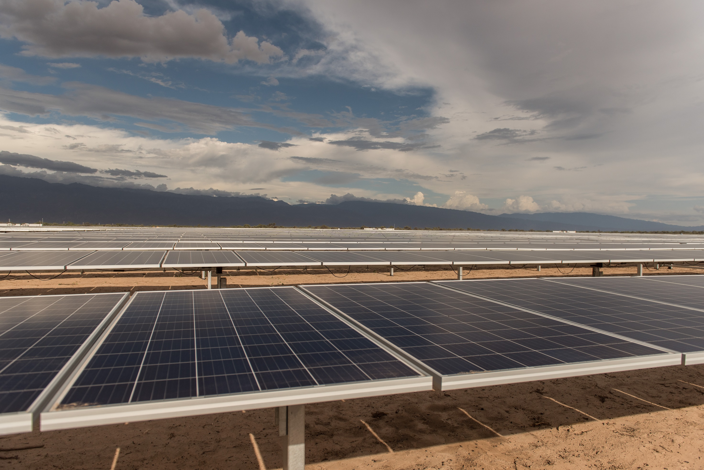

Fuente de energía es un fenómeno físico o químico del que es posible explotar su energía con fines económicos o biofísicos. Según un primer criterio de clasificación, se les llama «primarias» si provienen de un fenómeno natural y no han sido transformadas (el sol, la biomasa, las corrientes de agua, el viento, los minerales energéticos o radiactivos); y «secundarias» si son resultado de una transformación intencionada a partir de las primarias para obtener la forma de energía deseada (la energía eléctrica -que puede obtenerse a partir de cualquiera de las fuentes primarias-, la energía química de los distintos combustibles utilizados para el transporte, la calefacción o la industria -que pueden obtenerse a partir de muy distintas fuentes-, etc.) Según un segundo criterio, a las fuentes de energía primarias se las llama «renovables» si sus reservas no disminuyen de forma significativa en la escala de tiempo de su explotación (como la hidroeléctrica, la eólica, la solar, la geotérmica, la mareomotriz o la utilización energética de la biomasa); y las «no renovables» si lo hacen (como los combustibles fósiles -carbón, petróleo, gas natural- y la energía nuclear).

Se denomina “energías renovables” a aquellas fuentes energéticas basadas en la utilización del sol, el viento, el agua o la biomasa vegetal o animal -entre otras-. Se caracterizan por no utilizar combustibles fósiles –como sucede con las energías convencionales-, sino recursos capaces de renovarse ilimitadamente. Su impacto ambiental es de menor magnitud dado que además de no emplear recursos finitos, no generan contaminantes. Sus beneficios van desde la diversificación de la matriz energética del país hasta el fomento a la industria nacional; y desde el desarrollo de las economías regionales hasta el impulso al turismo.
La energía eólica hace referencia a aquellas tecnologías y aplicaciones en que se aprovecha la energía cinética del viento, convirtiéndola a energía mecánica o eléctrica. Existen dos tipos principales de máquinas que aprovechan la energía contenida en el viento: los molinos, que se utilizan fundamentalmente para bombeo mecánico de agua (algo muy común en el campo), y los aerogeneradores, equipos especialmente diseñados para producir electricidad.

Esta energía la que, mediante conversión a calor o electricidad, se aprovecha de la radiación proveniente del sol.
Nuestro planeta recibe del sol una gran cantidad de energía por año de la cual solo un 40% es aprovechable, cifra que representa varios cientos de veces la energía que se consume actualmente en forma mundial; es una fuente de energía descentralizada, limpia e inagotable que se puede transformar en electricidad
Se denomina “biomasa” a toda porción orgánica proveniente de las plantas, los animales y de diversas actividades humanas. El término “biomasa” abarca una variada serie de fuentes energéticas: desde la simple combustión de la leña para calefacción hasta las plantas térmicas para producir electricidad, usando como combustible residuos forestales, agrícolas, ganaderos o incluso “cultivos energéticos”, pasando por el biogás de los vertederos o lodos de depuradoras, hasta los biocombustibles.

Aunque también sea biomasa, nos referimos a este fluido como el producto gaseoso que se obtiene de la descomposición de la materia orgánica por el proceso biológico de digestión anaeróbica en un medio con carencia de oxígeno y por medio de bacterias específicas. Este gas refiere en general a la mezcla constituida por metano y dióxido de carbono, con pequeñas proporciones de hidrógeno, nitrógeno y sulfuro de hidrógeno.
Se entiende por “biocombustibles” al bioetanol, biodiesel y hasta el biogás producidos a partir de materias primas de origen agropecuario, agroindustrial o desechos orgánicos. Además de emplearse como combustibles para producir energía eléctrica, se los incorpora como corte de combustibles convencionales.
La fuente hidroeléctrica consiste en la conversión de la energía cinética y potencial gravitatoria del agua, en energía mecánica que finalmente es transformada en eléctrica. De acuerdo con el "Régimen de Fomento Nacional para el Uso de Fuentes Renovables de Energía para Producción Eléctrica", la categoría de "Pequeño Aprovechamiento" corresponde en la Argentina a centrales hidroeléctricas de hasta 50 megavatios de potencia instalada. Técnicamente esta fuente contempla tanto a los aprovechamientos llamados “de acumulación” (agua embalsada por un dique) como a los denominados "de paso" (o de agua fluyente), aunque los pequeños aprovechamientos se encuadran, en su mayoría, en esta última modalidad. La generación de energía a partir de una corriente de agua es la fuente de energía renovable más usada en el mundo para generar electricidad.

Las energías no renovables o energías convencionales son aquellas fuentes de energía que se encuentran en la naturaleza en cantidades limitadas, las cuales, una vez consumidas en su totalidad, no pueden sustituirse,1 ya que no existe sistema de producción o de extracción económicamente viable. De este tipo de energías existen dos clases:[cita requerida]
Combustibles fósiles.
Combustibles nucleares
La energía que se obtiene de la materia orgánica. Los combustibles fósiles son una fuente de energía que procede de la descomposición de materia orgánica de animales, plantas y microorganismos, y cuyo proceso de transformación tarda millones de años.
El petróleo es particularmente útil como combustible debido a su alta densidad energética. Como se mencionó anteriormente, la fuente de energía original del petróleo es el Sol, ya que la energía almacenada dentro de la materia orgánica muerta es lo que crea petróleo crudo con el tiempo Sustancia compuesta por una mezcla de hidrocarburos, de color oscuro y olor fuerte, de color negro y más ligera que el agua, que se encuentra en estado natural en yacimientos subterráneos de los estratos superiores de la corteza terrestre; su destilación fraccionada da productos de gran importancia industrial como la gasolina, el queroseno, el alquitrán, los disolventes, etc
El carbón o carbón mineral es una roca sedimentaria organógena de color negro, muy rica en carbono y con cantidades variables de otros elementos, principalmente hidrógeno, azufre, oxígeno y nitrógeno. Principalmente es utilizada como combustible fósil.
El gas natural es un recurso no renovable, dado que proviene de estos sedimentos fósiles que ya no se producen naturalmente. La explotación de este recurso y un aprovechamiento indebido e irracional puede llevar a que las próximas generaciones no cuenten con este preciado servicio.
El uranio es un recurso energético no renovable, así como el gas, petróleo y carbón. En la década del '50 su aplicación se centralizó en el uso como energía nuclear para el armamento militar y no fue hasta 1970 en que se implementó como energía eléctrica comercial, iniciándose así una segunda etapa de desarrollo.
La energía nuclear es la energía contenida en el núcleo de un átomo. Los átomos son las partículas más pequeñas en que se puede dividirse un elemento químico manteniendo sus propiedades. En el núcleo de cada átomo hay dos tipos de partículas (neutrones y protones) que se mantienen unidas. La energía nuclear es la energía que mantiene unidos neutrones y protones.